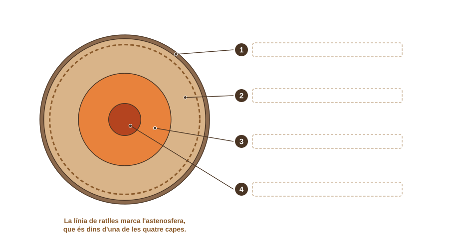
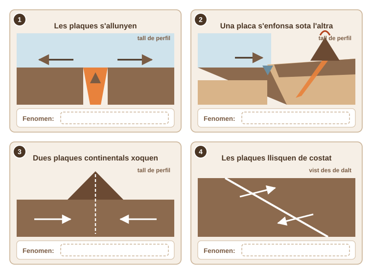
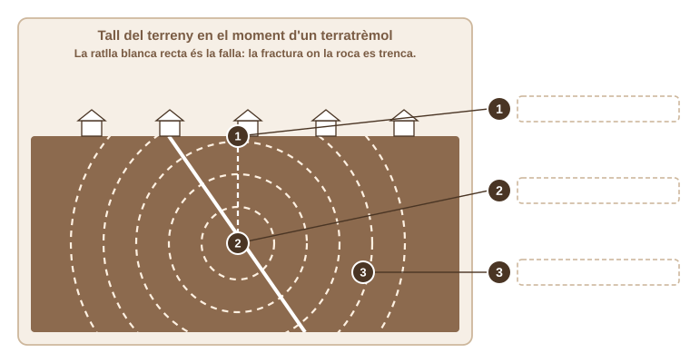
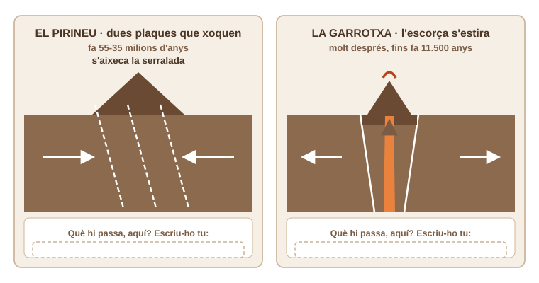

- Dic les quatre capes de la Terra i explico com sabem que hi són sense haver-hi baixat mai.
- Relaciono cada tipus de límit de plaques amb el que hi passa: dorsal, volcans, serralada o falla.
- Distingeixo l'hipocentre de l'epicentre, i la magnitud de la intensitat.
- Explico per quina raó el Pirineu té terratrèmols i la Garrotxa té volcans, que són dues coses diferents.
La sessió passada vas identificar roques que podies tocar. Avui parlarem d'una cosa que no pots tocar: què hi ha a sota dels teus peus, a quilòmetres de fondària. Abans que t'expliquem res, escriu i dibuixa el que ja et sembla que saps.
💡 Dibuixa-ho com te la imaginis: quantes capes hi poses, de quin material i quina et sembla més gruixuda.
✏️ La Terra tallada per la meitat
Al teu grup us donaran dos mapes del món: un amb els límits de les plaques i un altre amb els terratrèmols de magnitud superior a 4 dels últims 50 anys, que porta marcats també els volcans actius amb un triangle. Poseu-ne un damunt de l'altre i mireu-los a contrallum.
Per a les dues últimes files de la taula (Pirineu i Garrotxa) el mapa del món no basta: són dos punts massa a prop l'un de l'altre. Per a aquestes dues files feu servir el tercer mapa, el de Catalunya.
💡 Per a cada zona, mira primer el mapa de sismes i volcans i després el de plaques. Encara no cal que sàpigues quin tipus de límit és: això vindrà a l'apartat 2.
| Zona | Hi ha terratrèmols? | Hi ha volcans? | És a la vora d'un límit? | Què hi ha allà: muntanyes, illes, mar fondo… |
|---|---|---|---|---|
| Japó | ||||
| Atlàntic mig | ||||
| Himàlaia | ||||
| Califòrnia | ||||
| Pirineu | ||||
| La Garrotxa |
Ningú no ha baixat mai al centre de la Terra: el forat més fondo que s'ha perforat mai fa 12 km, i de la superfície al centre n'hi ha 6.370. Com ho sabem, doncs? Amb les ones sísmiques. Quan la roca es trenca en un terratrèmol, la sacsejada travessa el planeta sencer i canvia de velocitat i de direcció cada cop que canvia de material. Les ones P passen per sòlids i per líquids; les ones S, només per sòlids. Doncs bé: després d'un terratrèmol gran, hi ha una franja de l'altra banda del planeta on no arriba cap ona S. L'única explicació és que pel camí hi hagi una capa líquida.
Així s'ha deduït que la Terra té quatre capes: l'escorça (prima i rígida, 5-70 km), el mantell (2.900 km, sòlid, però amb una part que flueix a poc a poc), el nucli extern (líquid, de ferro i níquel: el que fabrica el camp magnètic que fa funcionar les brúixoles) i el nucli intern (sòlid, a uns 5.500 °C).

💡 Escriu el nom de cada capa a la casella del seu número, al costat del dibuix.
La capa de fora que és dura de debò (l'escorça i el tros de mantell sòlid que hi ha a sota) es diu litosfera, i està trencada en una quinzena de trossos: les plaques. Aquests trossos llisquen damunt l'astenosfera perquè el mantell fa convecció: el material calent de baix puja, es desplaça de costat, es refreda i torna a baixar, arrossegant les plaques. Van a 2-10 cm cada any, més o menys com et creixen les ungles. Sembla poquíssim, però el temps geològic és molt llarg: 5 cm/any durant 55 milions d'anys són 2.750 km. Per això l'Índia, xocant contra Àsia, ha pogut aixecar l'Himàlaia.

💡 Omple la taula amb el que veus als quatre panells i amb els exemples que has anotat a l'apartat 1.
| Tipus de límit | Les plaques… | Què hi passa (fenomen) | Un exemple real del mapa |
|---|---|---|---|
| Divergent | |||
| Convergent · subducció | |||
| Convergent · col·lisió | |||
| Transformant |
Una falla és una fractura de la litosfera. Les plaques empenyen, la roca aguanta acumulant tensió i, un dia, cedeix de cop: això és un terratrèmol. El punt de sota terra on la roca es trenca és l'hipocentre; el punt de la superfície just a sobre és l'epicentre, que és on se sol notar més.
Hi ha dues maneres de mesurar-lo i sovint es confonen. La magnitud mesura l'energia que ha alliberat: és sempre la mateixa xifra, la mesuris des d'on la mesuris, i és una escala en què cada punt val 32 vegades més energia que l'anterior. La intensitat mesura el mal que fa en un lloc concret, i per tant canvia de poble a poble: depèn de com n'és de lluny l'epicentre, de com n'és de fondo l'hipocentre i de si el terreny és roca dura o fang tou.

💡 Escriu el nom a la casella de cada número.

Ja tens les dues peces. El Pirineu es va aixecar fa 55-35 milions d'anys quan la placa Ibèrica i la placa Euràsia van xocar. Com que totes dues són escorça continental (gruixuda i poc densa), cap de les dues es va poder enfonsar: es van arrugar cap amunt. Aquelles falles encara es mouen, i per això hi ha terratrèmols — però cap volcà, perquè sense subducció no hi ha res que es fongui.
La Garrotxa és una altra història i molt posterior. Un cop acabat el xoc, l'escorça d'aquella zona es va estirar i es va trencar en blocs que van baixar (un rift). En aprimar-se l'escorça, el mantell de sota va pujar, es va fondre en part i el magma va arribar a la superfície. L'últim volcà va entrar en erupció fa uns 11.500 anys.